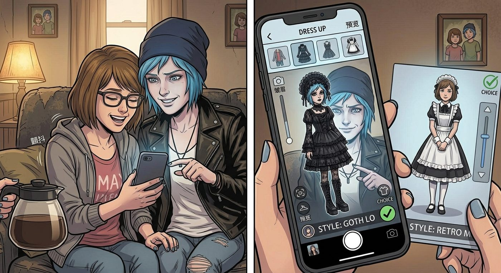

還債日


一、化妝與反差萌
又到了打工日前夕,Chloe 一邊翻著抽屜裡的化妝品,一邊碎碎念:「要不這次化個大濃妝,弄成網紅臉,誰都認不出我?」
「爆點就是妳這張『打架王女僕』的反差萌,」Brooke 頭也不抬地反駁,「妳要是化成網紅臉,那還有什麼看頭。」
「而且,」Warren 補了一刀,「妳現在雖然基本上不動手打架了,但那股氣場還在,擺明就是很吸睛的元素,別浪費了。」
Chloe 剛想反駁,一旁的 Kenji 已經默默打開平板,準備調出新一輪的市場數據支持這個論點。
「不用了不用了,」Chloe 舉手投降,語氣裡帶著點認命的疲憊,「不用搬數據了,我認了。」
她說完,目光卻不由自主地飄向一旁的 Max,帶著點欲言又止的意味。
二、AI 換裝遊戲
Max 注意到她的眼神,眨眨眼:「不買也可以先看看嘛。」
她興沖沖地掏出手機,打開最新上線的一款 AI 換裝應用——只要上傳照片,就能把 Chloe 的外貌套進各種虛擬服裝造型裡,即時預覽效果。
「來,」Max 拉著 Chloe 坐到自己身邊,把手機螢幕轉過來,「看,這個哥德蘿莉款怎麼樣?」
螢幕上的虛擬 Chloe 瞬間換上一身黑色蕾絲洋裝,配上誇張的荷葉邊。
「不行,」Chloe 皺眉,「太浮誇了。」
「那這個,」Max 又滑了一個造型,「復古女僕經典款?」
「……好像,還行。」
兩人就這樣一個換裝、一個評論,漸漸玩得不亦樂乎,原本的抗拒情緒也在這場毫無壓力的虛擬試裝遊戲裡消磨得差不多了。
三、獨守空店
打工日當天,原本熱熱鬧鬧的小隊,這次卻只剩下 Chloe 和 Max 兩人——Warren 說要幫家裡處理急事,Brooke 臨時被叫去參加社團活動,Kenji 則簡短地丟了句「今天有事」,便再沒了下文。
「這幾個,」Chloe 一邊繫著蕾絲圍裙一邊嘟囔,「說好的團隊合作呢,關鍵時刻全跑了。」
「大概是想給我們製造點『兩人時光』吧。」Max 笑著調侃,順手替她整理了一下頭上的貓耳髮箍。
四、意外的客人
店裡生意剛穩定下來沒多久,門口的風鈴忽然響起,Victoria 一身精緻的打扮走了進來,目光掃視一圈這間裝潢懷舊的小餐廳,神情裡帶著一絲不太自然的矜持。
「Victoria?」Chloe 又驚又疑,「妳怎麼會來這種地方?」
「我來討債的。」Victoria 昂首走到吧檯前坐下,語氣裡帶著慣有的傲氣,「上次幫妳約到聲樂老師的人情,妳總該還吧?我今天大老遠跑一趟,妳最好拿出妳們家最好的招待水準。」
Chloe 想起 Max 之前的「指導」,腦中閃過那幾張擺拍照片,乾脆一咬牙,擺出一個自認為可愛的托腮姿勢,對著 Victoria 眨了眨眼。
那個表情擠得五官都有點錯位,笑容僵硬得像是在便秘,與其說是可愛,不如說更接近某種災難現場。
Max 眼疾手快地舉起相機,精準地捕捉下這個「精彩瞬間」,肩膀控制不住地顫抖。
Victoria 盯著她這副表情,愣了兩秒,嘴角忍不住抽動了一下,終究還是繃住沒笑出聲。
「我要的是餐點,」她乾咳一聲,別開視線,「不是妳這副表情包,拜託妳正常一點。」
五、加料疑雲
Chloe 訕訕地收起那個災難級表情,轉身衝進廚房,找 Joyce 要了店裡最好的牛肉,親自動手做了一份漢堡,工整地擺盤,端了出去。
Victoria 看著眼前這份賣相不錯的漢堡,又抬頭看了眼 Chloe,語氣帶著一絲審慎的警惕:「這裡面,沒加什麼奇怪的料吧?」
「妳把我當什麼人了,」Chloe 一臉無辜,「我會做這種事嗎?」
「平時看她的紀錄,」Max 想都沒想,舉手搶答,「很有可能。」
「Max!」Chloe 瞪她一眼,轉身就要伸手去掐她。
「夠了,」Victoria 一聲輕咳,語氣裡帶著慣有的高傲,不耐煩地打斷這場鬧劇,「我是來享用餐點的,不是來看妳們兩個打情罵俏。」她環顧一圈這間小小的餐廳,又淡淡補了一句,「這種程度的服務水準,果然不夠專業。」
Chloe 悻悻然地收回手,瞪了 Max 一眼,示意「這筆帳晚點再算」,轉身端正態度。
Victoria 看著兩人這副打鬧模樣,遲疑了兩秒,還是拿起漢堡,小心翼翼地咬了一口。
三秒後,她的表情瞬間扭曲,眼淚毫無預警地飆出來,一手死死捂住嘴,另一手瘋狂朝水杯摸去。
「妳、妳果然——」她嗆得話都說不清楚。
「我沒加辣!」Chloe 也慌了,連忙翻看廚房動線,結果一眼瞥見流理台角落,那瓶「地獄復仇者」專用辣醬的蓋子,不知何時被打開,擱在那份漢堡曾經停留過的位置旁邊。
David 剛好扛著一箱食材從後門走進來,看到這一幕,一臉無辜地開口:「喔,那個啊,」他解釋道,語氣理所當然,「我看那份漢堡擺盤挺精緻的,想著客人吃了應該會喜歡點刺激口味,就好心幫忙加了點辣醬,提升一下風味。」
Chloe 和 Max 面面相覷,一時哭笑不得。
Victoria 灌下整整一大杯冰水,總算緩過氣來,瞪著 David 的方向,又氣又無語:「這算什麼『好心』——」
「算是,」Chloe 忍著笑,遞過去一疊餐巾紙,「雙鯨餐廳的特色服務,不收妳額外費用。」
Victoria 白了她一眼,卻也沒再多說什麼,接過餐巾紙擦了擦嘴角,語氣裡的火氣,不知不覺間消散了大半。
「妳這家店,」她總算緩過來,語氣少見地帶上一絲真心實意的評價,「還挺有意思的。」